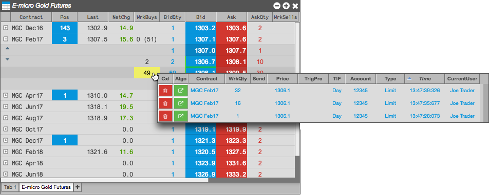
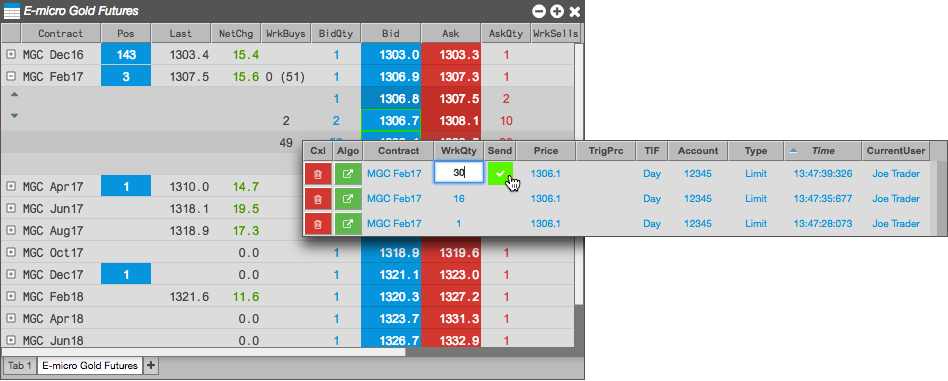

Using a Floating Order Book, you can modify the price and quantity of a working order in the Market Grid. The action (e.g., middle-click, left-click, hover) for opening the Floating Order Book is defined on the Orders tab in Preferences.
To modify working orders with a Floating Order Book:
Middle-click on a quantity in the WrkBuys or WrkSells column in the Market Grid to open the Floating Order Book.

In the Floating Order Book, change the working quantity and/or price.
By default, each click in the WrkQty, Price, and TrgPrc column decreases the value by 1.

- Click
 in the Send column to submit the order changes.
in the Send column to submit the order changes.